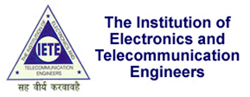

My name is Pinaki Dey & I'm a passionate Web Developer.
With a Masters degree in Biomedical Engineering I left IIT Mumbai in the summer of 2013 to join Rakuten Inc. in Tokyo, the World's third largest e-commerce company, as a Software Developer Engineer.
Apart of my crazy work schedule, I like to hang-out with my friends on the bustling streets of Roppongi, play a few matches on Chess.com, put my fortune at stake in Poker, make some strategy for Rome and do a little bit of coding with hell lot of passion.
PINAKI DEY
Biomedical Engineer
Web & Software Developer
HELLO THERE!
SKILLS
EMPLOYMENT
Starting from Oct. 1st, 2013
Shinagawa Seaside Rakuten Tower, 4-12-3 Higashi-shinagawa, Shinagawa-ku, Tokyo, Japan
Position: Software Development Engineer
RESEARCH
The Complex The World | The More Interesting It Becomes!
My Journey with MEMS has truly started with its complex nomenclature - Micro-Electro-Mechanical-Systems! And I was nowhere close to be acquainted with any of those terms! This very fact has always made me inquisitive to the Science of Miniaturization. If Programming is my Passion, MEMS has become my Love! The eternal possibilities with the Science of Miniaturization, mainly in the field of HealthCare, is something that really amazes me.
I'm just a rookie in this field and I aspire to continue improving my skills in coming days. I'm committed to invest my Academic life in conceptualizing and fabricating a device that can bring revolution in the field of HealthCare - An Intelligent Diagnosis and Drug Delivery Module for automated, controlled and sustained release of different drugs based on different physiological parameters.
Technical Expertise
- Micro-fabrication techniques: RCA, Thermal oxidation, DSA, EBL, PVD, ICP-CVD, HWCVD, PECVD, RIE, DRIE, ICP-RIE, Wet Etching, RTP, PLD, Silanization.
- Polymeric microfluidic device fabrication: Casting, Micromolding, LIGA.
- Characterization techniques: AFM, Profilometry, Ellipsometry, SEM, TEM, DLS, Contact angle measurement.
- Mask Design: CleWin, AutoCAD, Adobe Illustrator.
- Formulation and preparation of nano-engineered lipid vesicles for drug delivery.
EDUCATION
2011 - 2013INDIAN INSTITUTE OF TECHNOLOGY (IIT), MUMBAI
M.Tech. in Biomedical Engineering
Department of Biosciences and Bioengineering
CPI: 9.5 / 10
2007 - 2011WEST BENGAL UNIVERSITY OF TECHNOLOGY (WBUT), KOLKATA
B.Tech. in Biotechnology
Institute: Bengal Institute of Technology (BIT), Kolkata
CPI: 8.68 / 10
PROJECTS
May 2012 to June 2013Post-Graduate Project:
Transdermal Delivery of Vaccines using MEMS-based Microneedle Array
Guide: Prof. Rohit Srivastava, BSBE, IIT Mumbai
Co-Guide: Prof. S. P. Duttagupta, EE, IIT Mumbai
Description: This project aims to design, fabricate and successfully deliver a set of low-cost, disposable silicon microneedles array, integrated with polymeric reservoir, for the transdermal delivery of vaccines and drugs. This will provide the patients, mainly in developing countries, an economic, easy to use and painless alternative of hypodermic syringe. The device can be used for drug delivery, allowing a drug to diffuse to the immune-rich capillary bed of the dermis for uptake and subsequent systemic distribution in the blood stream. Since these needles would be inserted no deeper than the outermost, non-innervated layer of the skin, this technique would allow painless delivery. If sufficient bio-availability could be obtained using this route of administration, one could achieve the advantages of subcutaneous drug delivery, but in a non attention drawing and minimally invasive manner. This device will eliminate needle-phobia and ensure continuous and sustainable delivery of drugs for better patient compliance and improved acceptance. At a later stage of this project, the device will be integrated with sensors (enzymatic glucose sensor) and actuation systems (micropumps and valves) with optimized feedback control for controlled delivery of drugs (insulin) based on physiological parameter (blood glucose level).
Abstract of Stage I Dissertation: The skin, which has immunocompetent cells, is an attractive target for vaccine delivery. Transdermal immunization is the most effective immunization, though it requires considerable technical skills. A promising approach to transdermal immunization is microneedle array technology. Transdermal vaccination can offer simplified logistics and improved immunogenicity without the dangers posed by hypodermic needles. This report presents an insight into the transdermal route of drug and vaccine delivery, followed by a comprehensive description of different fabrication methods for solid and hollow microneedles as well as various aspects of vaccination using these microneedles. The current study also illustrates the development of microneedles by reactive ion etching (RIE), using an optimized novel recipe of gases and other parameter.
NanoBios Lab, IIT Mumbai
Centre of Excellence in Nanoelectronics (CEN), IIT Mumbai
Nanoelectronics Computation Laboratory (NCL), IIT Mumbai
Sep 2010 to Mar 2011Under-Graduate Project:
Production of Biodiesel by Lipase-Catalyzed Transesterification using Immobilized Pseudomonas fluorescens | Comparison of the Biodiesels and Quality Analysis.
Guide: Prof. Banani Ray Chowdhury, BIT Kolkata
Abstract: Biodiesel is a major source of renewable energy and bears utmost importance for its use as a
substitute of petro-diesel in automobile engines.
Chemically, biodiesel can be characterized as Fatty Acid Methyl Esters (FAME).
It can be produced from plant oils or animal fats or triglycerides by the process known as transesterification, along with the production of glycerin as byproduct. Transesterification can be done chemically as well as enzymatically. In this process chemical transesterification will be carried out using methanol and base (NaOH/KOH) as catalyst; and enzymatic transesterification will be carried out with immobilized microbial lipases.
Objectives of the Project:
- Production of biodiesel from Soybean oil, Rapeseed oil, Waste Vegetable Oil (WVO) and Jatropha curcas.
- Production of biodiesel by Immobilized Microbial Lipase-catalyzed enzymatic transesterification and also by Base-catalyzed chemical transesterification.
- Comparative studies on the cost-effectiveness of using different transesterification processes for the production of biodiesels from different sources.
- Comparative studies on the quality parameters of the biodiesels produced from different sources using different transesterification processes.
- Production & conservation of glycerin for its suitable use.
- Production & conservation of Bio-oil.
- Drafting methods for the production of Biogas.
- Design & Process Simulation of the manufacturing plant for the industrial production of Biodiesel.
- Proposal and analysis of the use of genetically modified microorganisms for higher expression of lipase.
Dissertation: Download
Presentation: Download
MicroBiology Lab, Department of Biotechnology, BIT Kolkata
IT Projects
July 2012IntelliScholar - Web Application
Grand Prize (INR 150,000) Winning Entry for Elsevier CodeForScience India Competition
Description:
Technologies Used: JavaScript, jQuery, AJAX, XML, HTML5, CSS, Sciverse API, NCBI API, Entrez API, Facebook API
Link: http://tinyurl.com/IntelliScholar
IIT Mumbai
Ongoingwww.NanoBiosLab.com
Description: Official Website of NanoBios Lab at IIT Mumbai,
with capability of Online Equipment Slot Booking.
Technologies Used: PHP, JavaScript, jQuery, XHTML, CSS, Joomla, SQL, Google Visualization API, Facebook API, SMS Gateway
IIT Mumbai
Nov 2011 to Dec 2011CardioMeter - Real-Time ECG-Monitoring & Analysis
System
Advisor: Prof. Soumyo Mukherji, IIT Mumbai
Description: Real-Time ECG-Monitoring & Analysis System with in-built capability of live acquisition of ECG signal and diagnosis of heart rate and different arrhythmic conditions.
Technologies Used: LabWindows CVI 7.0, NIDAQ Toolkit
Download Link: Download
IIT Mumbai
July 2010 to May 2011Library Management System (LMS)
Advisor: Biswajit Chakraborti, IETE Kolkata
Description: Web Based Automation System for Library Record Maintenance.
Technologies Used: ASP.NET platform using AJAX WebUI; JavaScripts, CSS, HTML, Visual Studio 2008 (IDE), SQL Server 2005
Download Link: Download
Institute of Electronics and Telecommunications Engineering (IETE), Kolkata
Dec 2009www.Bits2Bytes.info
Description: Official Website of Annual Technical Festival of BIT Kolkata, for the year of 2009.
Technologies Used: JavaScript, HTML, CSS
BIT Kolkata
Course Projects
Application of Wavelets in Digital Image Processing for Proteomics and 2-D ElectrophoresisFeb 2012 to Apr 2012
Advisor: Prof. V. M. Gadre, IIT Mumbai
For the Course: Wavelets (EE 678)
Description: This project dealt with the application of wavelets on 2D-Gel Electrophoresis image for comparative study to find the best applicable wavelet, de-noising of gel images through statistical modeling and non-parametric method, and protein spot segmentation.
My Role:
- Worked on optimization of Watershed Transform to increase its accuracy in detecting protein spots and eliminating over-segmentation.
- Done a major part of the MatLab coding required for the project.
Technologies Used: MATLAB
Report: Download
Department of Electrical Engineering, IIT Mumbai
Design Simulation and Fabrication of Piezoelectric Micropump Integrated Polymeric Microneedle Array for Transdermal Drug Delivery and Fluid ExtractionJan 2012 to May 2012
Advisor: Prof. S. P. Duttagupta, IIT Mumbai
For the Course: Introduction to MEMS (EE 701)
Description: In this course project we conceptualized a novel automated device for controlled and sustained transdermal drug delivery and fluid extraction and chalked out its complete fabrication process. We also have designed the model of the device, performed simulations for mechanical testing.
Presentation: Download
Department of Electrical Engineering, IIT Mumbai
Statistical analysis of academic performance of post-graduate students in IIT MumbaiFeb 2012 to May 2012
Advisor: Prof. S. Arunkumar, IIT Mumbai
For the Course: Biostatistics (BM 602)
Description: In this course project we studied and compared the effect of different parameters, related to the academic background of students, on their academic performances at IIT Bombay. Performed 1-way, 2-way ANOVA and regression analysis for the validation of the studies.
Technologies Used: R
Report: Download
Presentation: Download
Code: Download
Department of Biosciences and Bioengineering, IIT Mumbai
Game Development - HangManAug 2011 to Sep 2011
Advisor: Prof. Soumyo Mukherji, IIT Mumbai
For the Course: Virtual Instrumentation in Biomedical Engineering (BM 627)
Description:
Technologies Used: LabWindows CVI 7.0, Adobe Photoshop CS5
Download Link: Download
IIT Mumbai
COURSES
| Degree | Sem | Course | Code | Instructor | Credit | Point | Grade |
|---|---|---|---|---|---|---|---|
| M.Tech. | IV | Software Project Management | MGT690 | Prof. Sonar M Rajendra | 3 | AU | |
| M.Tech. | III | VLSI Technology | EE 669 | Prof. Anil K. | 6 | AU | |
| M.Tech. | II | Introduction to MEMS | EE 701 | Prof. S. P. Duttagupta | 6 | 9 | AB |
| M.Tech. | II | Wavelets | EE 678 | Prof. V. M. Gadre | 6 | AU | |
| M.Tech. | II | Biostatistics | BM 602 | Prof. S. Arunkumar | 6 | 8 | BB |
| M.Tech. | II | Biomedical Microsystems | BM 658 | Prof. R. Srivastava | 6 | 10 | AA |
| M.Tech. | II | Bioelectricity | BM 636 | Prof. R. Manchanda | 6 | AU | |
| M.Tech. | II | Advanced Biomaterials | BM 656 | Prof. R. Banerjee | 6 | 9 | AB |
| M.Tech. | II | Clinical Physiology | BM 604 | Prof. V. P. Soni Prof. Y. Lokhandwala |
3 | 7 | BC |
| M.Tech. | II | Experimental and Quantitative Physiology | BM 610 | Prof. J. Bellare Prof. P. Tayalia Prof. R. Srivastava |
3 | 10 | AA |
| M.Tech. | I | Virtual Instrumentation in Biomedical Engineering | BM 627 | Prof. S. Mukherji | 4 | 9 | AB |
| M.Tech. | I | Elements of Circuits and Instrumentation | BM 659 | Prof. V. M. Gadre | 3 | 8 | BB |
| M.Tech. | I | Signals and Systems for Biomedical Engineering | BM 661 | Prof. R. Srivastava | 3 | 9 | AB |
| M.Tech. | I | Electrodiagnostics, Therapy and Electrical Safety | BM 663 | Prof. R. Manchanda | 3 | 9 | AB |
| M.Tech. | I | Introduction to Biomechanics | BM 633 | Prof. S. Sen | 3 | 9 | AB |
| M.Tech. | I | Introduction to Bio-Nanotechnology | BM 631 | Prof. R. Srivastava Prof. R. Banerjee |
4 | 10 | AA |
| M.Tech. | I | Cell Physiology and Biopotentials | BM 651 | Prof. Y. Lokhandwala Prof. R. Manchanda |
3 | 7 | BC |
| M.Tech. | I | Biomaterials | BM 655 | Prof. R. Banerjee | 3 | 8 | BB |
| M.Tech. | I | Medical Imaging Physics | BM 653 | Prof. Ranjith P. | 3 | 10 | AA |
| M.Tech. | I | Physiology for Engineers | BM 603 | Prof. V. P. Soni | 6 | 8 | BB |
ACHIEVEMENTS
Feb 2011Secured All India Rank 2 in GATE (Graduate Aptitude Test
in Engineering) 2011
Marks Obtained: 77.33 / 100
Paper: BT, Total Examinees: 16425
June 2011Secured All India Rank 6 (JRF) in CSIR NET June 2011
Paper: LS
July 2012Won Grand Prize (INR 150,000) for Web Application Development
in Elsevier CodeForScience India 2012 Competition
Media Coverage:
June 2012Won Best Concept Award (INR 25,000) for Elsevier CodeForScience
India 2012 Concept Formulation Round
INTERNSHIP
Jun 2010 to Aug 2010
Trained on Process Control, Production & Quality Assessment of Kingfisher Beer.
CERTIFICATIONS
July 2009
Certified Linux System Administrator (Red Hat Enterprise Linux 5)
July 2010
Certified on Dot Net Framework (C# and ASP.Net) and SQL Server
ACTIVITIES
SEE BELOW
ORGANIZATIONAL ACTIVITIES
Nov 2012 to June 2013Working as a Web Secretary in Symbiotek Association
for GeneRations 2013 (Annual Technical Festival of Department of Biosciences and Bioengineering, IIT Mumbai).
Responsible for
- design, development and administration of Symbiotek.org
- publicity and event management
IIT Mumbai
Sep 2012 to June 2013Working as a Group Coordinator for
"Energy Technology Vision 2035" organized by TIFAC of DST, GoI.
Responsible for
- administration of the official website www.etvision2035.in
- editing and compiling the final report, to be submitted to the Govt. of India
- communicating and coordinating with other group members spread all across India
- publicizing and conceptualizing competitions and events
IIT Mumbai
Jul 2012 to June 2013Worked as a Student Coordinator
Coordinated with the Junior students of the Departmental M.Tech. Program for their Proper Orientation and Smooth Induction into the Academic Life of IIT Mumbai. Assured them continuous logistical support for all sort of academic and non-academic issues.
IIT Mumbai
Jul 2010 to May 2011Worked as Department Placement Secretary
Was responsible for Coordinating with the Placement Cell for arranging Practice Aptitude Test Sessions, Distribution of Placement Preparatory Materials, Administration and Quality Assurance of the Online Placement Forum and Raising Student's Concerns to the Authorities.
BIT Kolkata
Jul 2009 to Jan 2010Organized Annual Technical Festival of college
Bits2Bytes 2009
Developed and maintained the official websites of Bits2Bytes 2009.
BIT Kolkata
SEMINARS
Nov 2011Simultaneous Delivery of Chemotherapeutic and
Thermal-Optical Agents to Cancer Cells by a Polymeric Nanocarrier
Abstract: As mortality due to cancer continues to rise, advances in nanotechnology have significantly become an effective approach for achieving efficient drug targeting to tumor tissues by circumventing all the shortcomings of conventional chemotherapy. Hyperthermia can aid the functionality of chemotherapeutics, but current hyperthermia delivery methods are hard to apply selectively and locally. During the past decade, the importance of nano-sized polymeric drug delivery systems in oncology has grown exponentially. The objective of this review is to outline the current major approaches of delivering chemotherapeutic drugs and hyperthermia inducing thermal-optical agents, simultaneously, to the target cancer tissue using nano-sized polymeric drug-carrier system.
Presentation: Download
IIT Mumbai
Nov 2010Production of Biodiesel by Chemical and Enzymatic
Transesterification
Abstract: Production of Biodiesel from different sources by Immobilized Microbial Lipase-catalyzed enzymatic transesterification as well as Base-catalyzed chemical transesterification and Comparison of the biodiesels in terms of cost-effectiveness and quality.
Presentation: Download
BIT Kolkata
May 2010Genetically Modified Crops | Its Development & Health Aspects
Abstract: GM Crops are genetically engineered plants cultivated for human consumption using the latest molecular biology techniques to enhance its desired traits. This seminar gives a comprehensive idea about the different approaches undertaken to develop GM Corps.
Presentation: Download
BIT Kolkata
Oct 2009Drug Addiction | The Effects of Drugs on Human |
Treatments & Rehabilitation | A Comprehensive Preview
Abstract: Drug addiction is a state of periodic or chronic intoxication produced by the repeated consumption of a drug (natural or synthetic). This seminar gives a comprehensive idea about the causes of different types of drug addictions, biochemical insights to them as well as their effects and treatment and rehabilitation procedures.
Presentation: Download
BIT Kolkata
SPORTS
ADVANCEDCHESS
- IIT Mumbai, 2012Represented Hostel 14 in Chess General Championship.
- IIT Mumbai, 2012Represented Department in PG Chess Tournament.
Secured 4th Position amongst 22 Departments. - IIT Mumbai, 2011Represented Hostel 5 in Chess General Championship.
- IIT Mumbai, 2011Represented Department in PG Chess Tournament.
REGULARGYM & FITNESS
For workout I generally follow Kris Gethin's DTP Program.
ROOKIEBADMINTON
YELLOW BELTKARATE
Goju-Ryu Karate.
AFFILIATION
Aug 2010 to PresentInstitute of Smart Structures and Systems (ISSS)
REFERENCES
IIT MumbaiPROF. ROHIT SRIVASTAVA
I have been working under Prof. Rohit Srivastava since May, 2012 on the project Transdermal Delivery of Vaccines using MEMS-based Microneedle Array at NanoBios Lab, IIT Mumbai. Before that I have completed my Credit Seminar (BM 695) under his guidance and have taken following of his courses:
- Biomedical Microsystems (BM 658) | Grade Obtained: AA (10 / 10)
- Experimental and Quantitative Physiology (BM 610) | Grade Obtained: AA (10 / 10)
- Introduction to Bio-Nanotechnology (BM 631) | Grade Obtained: AA (10 / 10)
- Signals and Systems for Biomedical Engineering (BM 661) | Grade Obtained: AB (9 / 10)
Tel: +(91-22) 2576 7746
Email: rsrivasta[at]iitb.ac.in
Website: www.nanobioslab.com/rohit.html
Office: Civil Engg. (Room 213)
Department of Biosciences and Bioengineering
IIT Mumbai
Mumbai 400076
India
CONTACT ME
E-MAIL ME
LOCATE ME
© By Pinaki Dey | www.pinakidey.com | Protected by CopyScape

SOCIAL ACTIVITIES
Volunteer for Indian Red Cross Society
Life Time Member
Volunteered during the flood in the District of Nadia in West Bengal.
Volunteered several times for Blood Donation (Annual Camps or on Individual Requests)